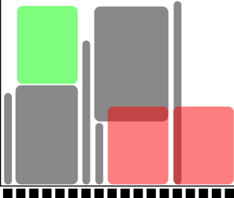
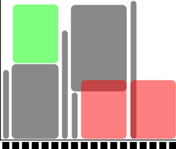

Submitting jobs¶
Question
- This is a short introduction in how to reach the calculation nodes
Slurm, sbatch, the job queue¶
- Problem: 1000 users, 500 nodes, 10k cores
- Need a queue:
 - x-axis: cores, one thread per core
- y-axis: time
- x-axis: cores, one thread per core
- y-axis: time
- Slurm is a jobs scheduler
- Plan your job and but in the slurm job batch (sbatch)
sbatch <flags> <program> or
sbatch <job script>
- Easiest to schedule single-threaded, short jobs
 

- Left: 4 one-core jobs can run immediately (or a 4-core wide job).
- The jobs are too long to fit in core number 9-13.
- Right: A 5-core job has to wait.
- Too long to fit in cores 9-13 and too wide to fit in the last cores. How to submit a job to Slurm?
What should a jobscript contain?
- project number
- max time
- partition
- number or core and/or nodes
- job name
- special features
A typical job script:¶
#!/bin/bash
#SBATCH -A naiss2023-22-247
#SBATCH -p node
#SBATCH -N 1
#SBATCH -t 24:00:00
module load software/version
./my-script.sh
Useful SBATCH options:
--mail-type=BEGIN,END,FAIL,TIME_LIMIT_80--output=slurm-%j.out--error=slurm-%j.err
Useful commands:
jobinfo -p develsinfo -p node - M snowyjobinfo -u username --state=runningjobinfo -u username --state=pendingsalloc -A naiss2023-22-247 --begin=2023-03-24T08:00:00starts an interactive job earliest tomorrow at 08:00
How to cancel jobs?¶
scancel <jobid>
Job dependencies¶
sbatch jobscript.shsubmitted job with jobid1sbatch anotherjobscript.shsubmitted job with jobid2--dependency=afterok:jobid1:jobid2job will only start running after the successful end of jobs jobid1:jobid2- very handy for clearly defined workflows
- One may also use
--dependency=afternotok:jobidin case you’d like to resubmit a failed job, OOM for example, to a node with a higher memory:-C mem215GBor-C mem1TB
GPU flags¶
Example
I/O intensive jobs: use the scratch local to the node¶
Example
#!/bin/bash
#SBATCH -J jobname
#SBATCH -A naiss2023-22-247
#SBATCH -p core
#SBATCH -n 1
#SBATCH -t 10:00:00
module load bioinfo-tools
module load bwa/0.7.17 samtools/1.14
export SRCDIR=$HOME/path-to-input
cp $SRCDIR/foo.pl $SRCDIR/bar.txt $SNIC_TMP/.
cd $SNIC_TMP
./foo.pl bar.txt
cp *.out $SRCDIR/path-to-output/.
Profiling on the GPUs¶
-
nvidia-sminvidia-smi dmon -o DTnvidia-smi --format=noheader,csv --query-compute-apps=timestamp,gpu_name,pid,name,used_memory --loop=1 -f sample_run.lognvidia-smi --helporman nvidia-smi
-
module load nvtopnvtop
Additional information¶
Keypoints
- You are always in the login node unless you:
- start an interactive session
- start a batch job
- Slurm is a job scheduler
- add flags to describe your job.